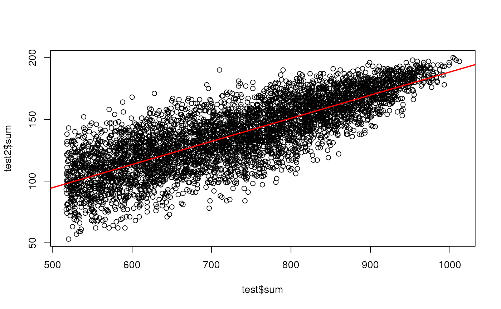

big_colstats.RdStandard univariate statistics for columns of a Filebacked Big Matrix.
For now, the sum and var are implemented
(the mean and sd can easily be deduced, see examples).
big_colstats(X, ind.row = rows_along(X), ind.col = cols_along(X))
| X | A FBM. |
|---|---|
| ind.row | An optional vector of the row indices that are used. If not specified, all rows are used. Don't use negative indices. |
| ind.col | An optional vector of the column indices that are used. If not specified, all columns are used. Don't use negative indices. |
Data.frame of two numeric vectors sum and var with the
corresponding column statistics.
#> 'data.frame': 4542 obs. of 2 variables: #> $ sum: num 680 821 789 843 562 666 902 537 536 553 ... #> $ var: num 0.46 0.324 0.393 0.311 0.518 ...#> 'data.frame': 4542 obs. of 2 variables: #> $ sum: num 138 157 115 181 92 106 167 124 120 94 ... #> $ var: num 0.46 0.369 0.513 0.176 0.579 ...#> [1] TRUE#> [1] TRUE# deduce mean and sd # note that the are also implemented in big_scale() means <- test2$sum / length(ind) # if using all rows, # divide by nrow(X) instead all.equal(means, colMeans(X.ind))#> [1] TRUE#> [1] TRUE